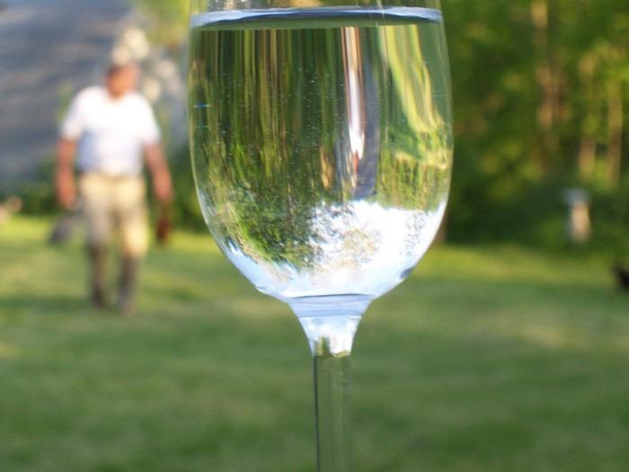

Next Photo
-
Vote
Grandpa in a Glass
The warmth of this picture is conveyed through the softness of the tones and shapes. It ads to the effect of my grandfather walking through the scene. The light comming through the glass is turned upside down and ads a little twist to the photo.
More...
Title: Grandpa in a Glass
Description: The warmth of this picture is conveyed through the softness of the tones and shapes. It ads to the effect of my grandfather walking through the scene. The light comming through the glass is turned upside down and ads a little twist to the photo.
Keywords: grandpa grandfather glass warm
Hidden: n
Date added: Sat Mar 04 16:32:13 CST 2006
Date taken: Sun May 09 17:58:23 CDT 2004
Camera: EASTMAN KODAK COMPANY.KODAK CX6330 ZOOM DIGITAL CAMERA.
Resolution: 2032x1524
Mode:
Shutter speed: 70/10
Flash: 16
Exposure time: 1/125
Iso:
Metering: 5
Aperture: 45/10
Focal length: 168/10
Artist: NathanielGuy Mahieu
Copyright: 2006 NathanielGuy Mahieu
Views: 4371